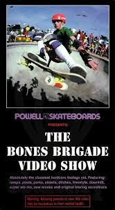
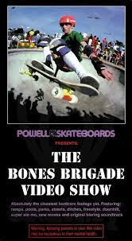

About Me


- Born and raised in Texas. Currently residing in Houston.
- Interested in AI infrastructure and semantic web technologies.
- Connect with me on LinkedIn

 

Lance Mountain was a member of the Original Powell Peralta "Bones Brigade. To Learn More: